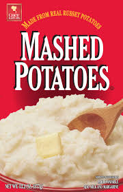

Instant Potatoes

Description
Instant potatoes are a quicker way to make
delicious mashed potatoes to add to any dish.
They only take about 5 minutes to prepare, and taste
amazing to boot.
Ingredients
- milk
- water
- butter
- Salt
- Flakes
Steps
- Add water, butter, and salt at appropiate serving portions
- Boil the water
- Add milk, then flakes
- Stir